loading...
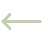
back to homeAI copilot for people managers
Managers were opening ARVO once, then never coming back. Our client thought it was only going to be a UI fix. I led a team of six to figure it out.
We spent six weeks uncovering issues, more than a UI fix could resolve. We ended up with a usability brief and we definitely had our Client in on it for the entire process.
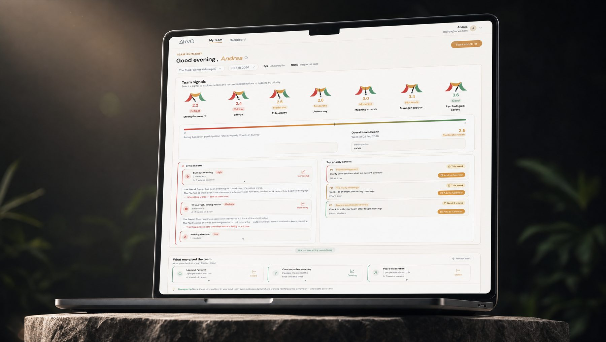
“Working with this UX/UI team was a genuinely impressive experience. From the outset, they handled all project concerns with professionalism and responsiveness, and their strong internal coordination meant I always faced a cohesive, well-aligned team. What stood out most was their user research capability — they recruited a surprisingly robust pool of the right user profiles within a very short timeframe, and conducted interviews in a manner that users themselves described as approachable, friendly, and open. Their design recommendations were methodically tested and immediately actionable, directly strengthening the product's user experience. The final mockups reflected a level of craft and polish I wouldn't hesitate to put in front of investors or clients. Any organization looking to undertake serious UX work would be fortunate to have this team …”

01 TL;DR
Two of the five original problems got fixed and proven with real managers. Three turned out to be Eileen's to solve, not mine — decisions about how ARVO's business model works, not something a redesign could reach on its own. That distinction is really what six weeks of work produced.
92%
12 of 13 managers read team health correctly, under 3 minutes, using traffic-light dials instead of dense data — solving the Manager's Paradox.
67%→70%
Two different measures on the same issue:
67% missed critical signals on the original dashboard (8 of 12). After the redesign, 70% specifically praised the lighter mental load (9 of 13).
8/12
That's how many managers cited accessibility issues in testing. We redesigned for the final iteration, but the sprint ended before we could retest it.
5 of 7 issues survived every design iteration in some form — three of them because they were business-model problems. No UI change fixes anonymity trust or cadence assumptions.
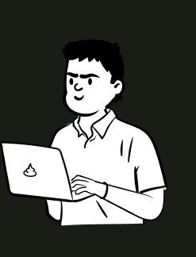
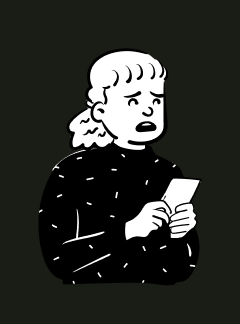
The authority to restructure workloads sits with HR, not with the managers ARVO was built for. The platform prescribed solutions its users couldn't execute.
ARVO's data is only useful if managers write honestly, and honesty requires trust the product hadn't earned yet. A privacy badge in the settings menu doesn't fix that — it needs a structural decision about how anonymity actually works.
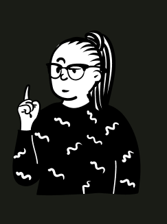
02 Initial Research
The 12 managers we recruited
Small vs Large
59% led teams of 3–10,
41% led teams of 11+
We recruited 12 managers across 8 industries and interviewed them one at a time. Half the pool were first-time managers while the others had an average of 6 years of managerial experience. We sort this balance to uncover possible paint points which may differ according to length of experience, and testing only one type would have told half the story.
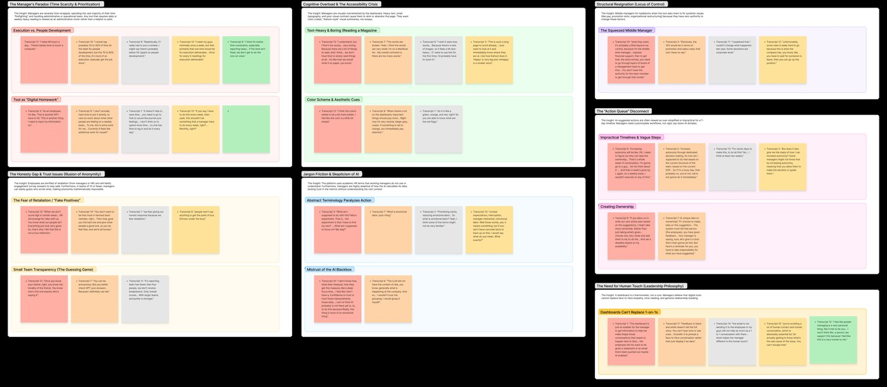
Research synthesis; affinity mapping across the 12 sessions
83%
managers citing no time to read through report
10 of 12 managers spend most of their week doing tasks, not managing people. If ARVO took more than 5 minutes, they dropped it.
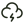
Jargons & Mgt 10192%
Found it confusing and basic
11 of 12 got tripped up by jargon like "emotional labour" — language that reads fine in a research paper, not on a Tuesday afternoon.
67%
felt anonymity of feedback was not possible
8 of 12 said small team sizes made it easy to guess who wrote what, so they held back the truth instead.
67%
missed key alerts due to cluttered layout
8 of 12 managers scrolled straight past the one signal that actually needed their attention that week.
58%
felt powerless to fix issues not within their authority
Salary, headcount, and leave policy came up again and again — none of it something a dashboard redesign can fix.
The five patterns we identified based on feedback by 12 Managers.
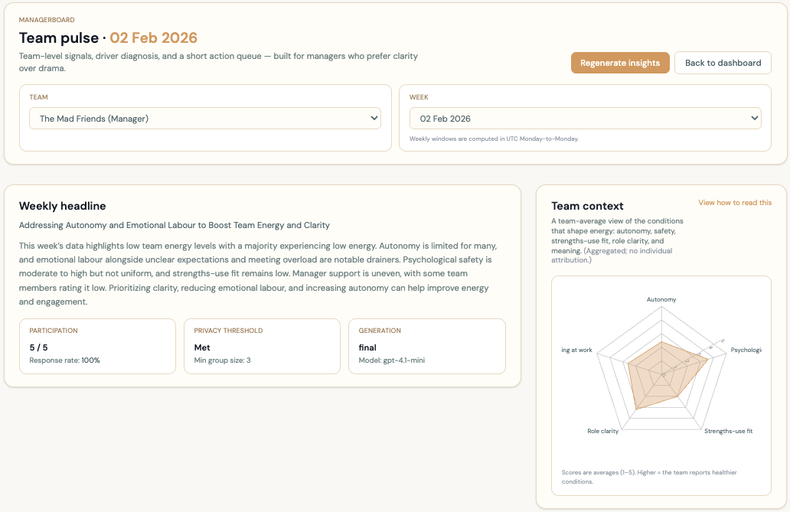
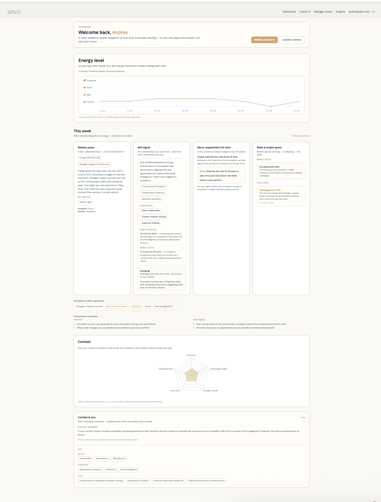
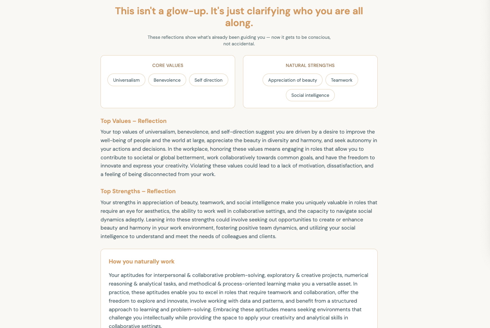
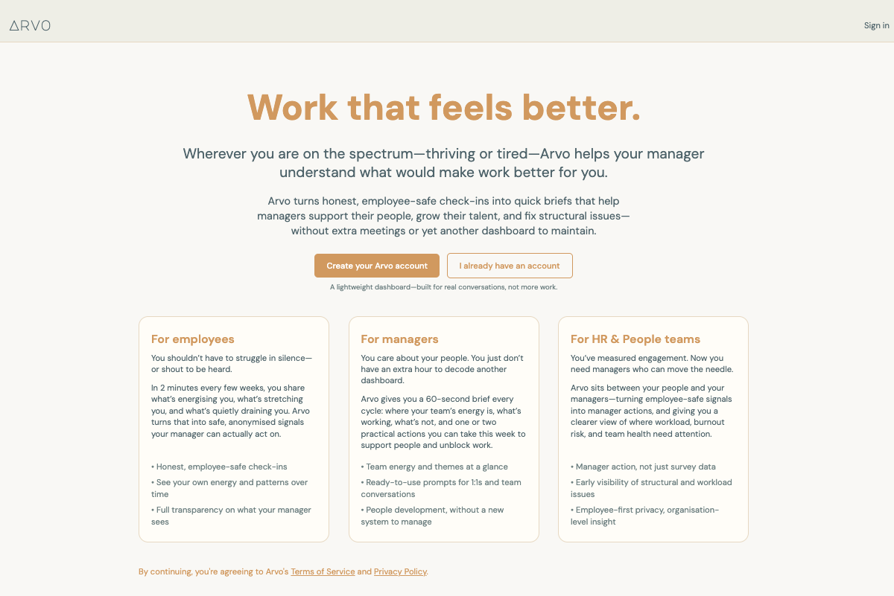
The original dashboard — what 12 managers were actually looking at when these five failures surfaced.
Five patterns held up across all twelve sessions, and almost none of them were really about visual design. Managers were rejecting the platform outright. They didn't trust the results shown based on weekly survey results. The generated report read like an HR textbook. The layout buried anything urgent under everything else. And the one that worried me most — some of them had already decided the tool couldn't help, before we'd even sat down together.
While it is common for redesigns to involve tearing apart everything, it was clear through the discovery process that there was a feature that should be kept and better yet, improved upon.
overwhelming wall of text and every signal looked equally urgent so we added clear signals for managers to easily scan for issues and prioritise key tasks faster.
10 of 12 managers approved.
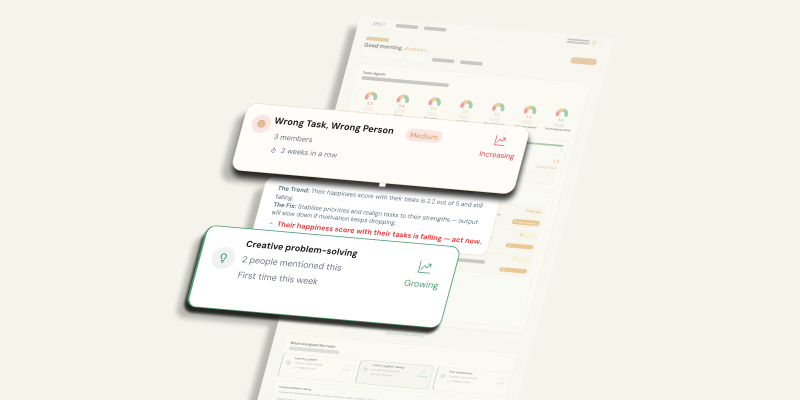
03 The pivot
Rather than work on the five issues with the team and start designing. I wanted our client to work through the problem with us first, rather than hand her a solution to react to once it was already built. Shared ownership, before any solution had a name.
Running a separate ideation session first wasn't realistic. Everyone on the team, me included, was doing this around a full-time job and the whole project lived in our spare time. So I structured the three design sprints below as the ideation itself, folded into the same workshop where Eileen was in the room. That wasn't just efficient. Having her there for the actual brainstorming, not just a later review, gave the ideation a kind of accountability it wouldn't have had if the team had gone off and sketched alone.
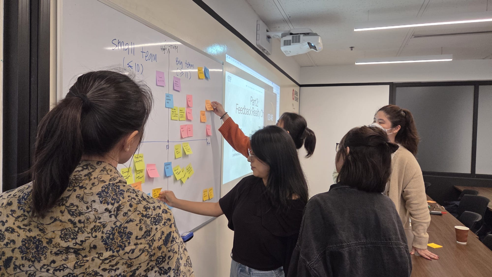

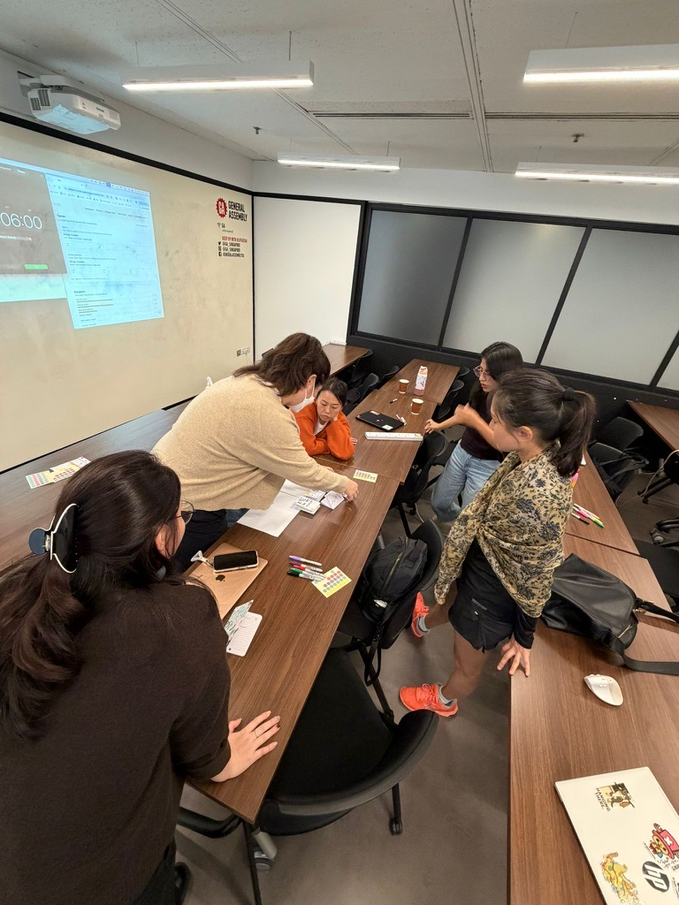
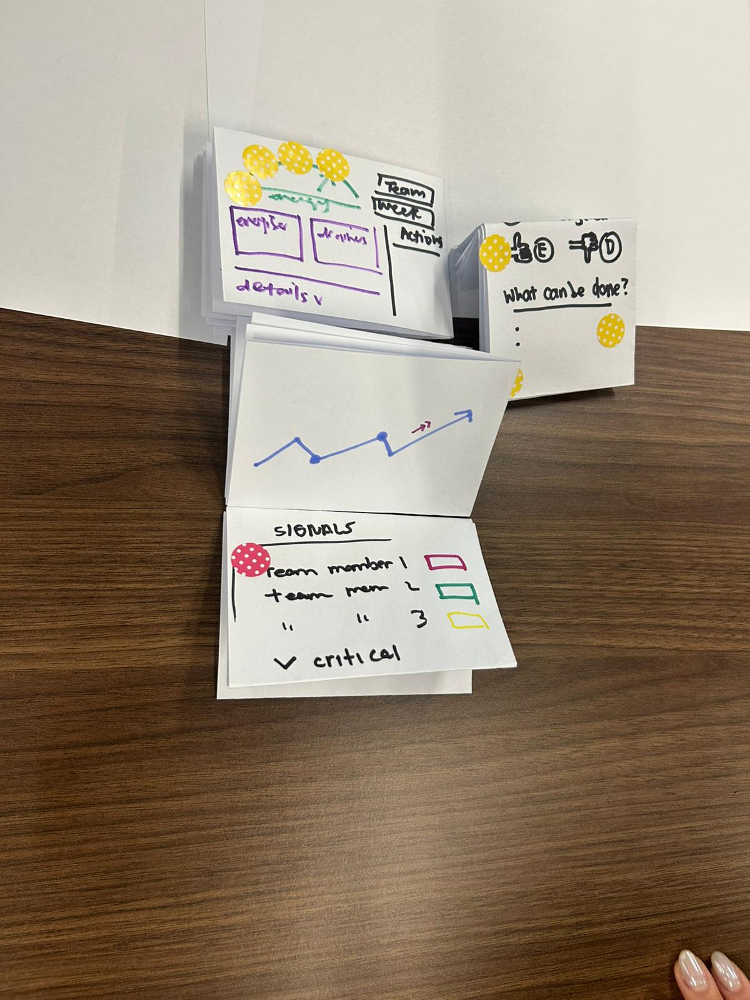
Co-creation workshop with Eileen — mid-point of the sprint.
Sprint 01
We set strict visual limits based on team size, because a manager with three reports and a manager with fifteen shouldn't be looking at the same amount of information. Facilitated a crazy-8 session. Contributors voted on which idea they liked best; Features liked were pieced together for Eileen to agree to.
Sprint 02
We established strict dashboard anonymization rules by having participants define what data felt secure to share in weekly surveys across both small and large teams.
Sprint 03
We stripped out the academic jargon and rebuilt the recommendations as specific, low-effort actions a manager could actually take that day.
04 The redesign
Results from our sprints were then incoporated into the first redesign. We structurally consolidated four pages, reshuffled sections for clarity. We eventually settled onto a single page to cut down on how much a manager had to switch between screens just to get a read on their team, and a traffic-light system was built specifically to deal with Cognitive Overload.
Deciphering the dashboard took too much time.
Original — Friction
83%
10/12 rejected the platform
Redesign — Resolved
92%
12/13 understood alerts <3 min
Dense dashboard with too much information to mentally process.
Original — Friction
67%
8/12 missed at-risk signals
Redesign — Resolved
70%
9/13 praised reduced mental tax
05 Design Fixes
A compilation of the fixes that came out of both rounds. I directed which research finding each feature needed to solve, and made sure every decision traced back to something a real manager had told us.
Eight of twelve managers in Round 1 skimmed straight past the signals that actually mattered, because the original dashboard read more like a written report than something you could act on at a glance. I replaced the dense text with a single colour and a single number, so a manager could tell what needed their attention without decoding anything first.
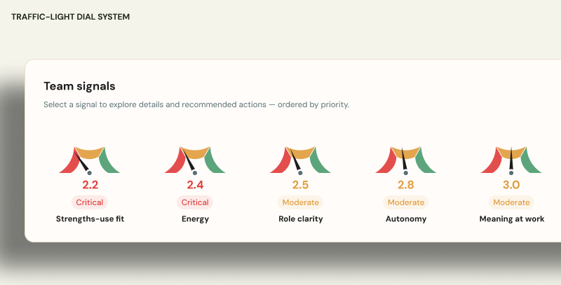
Ten of twelve managers told us they spent 70 to 90 percent of their time on execution, not admin, which meant there was never going to be patience for a tool that asked them to click through several pages. I compressed everything onto one page — not because simpler is always better, but because that was the only version that actually fit into their day.
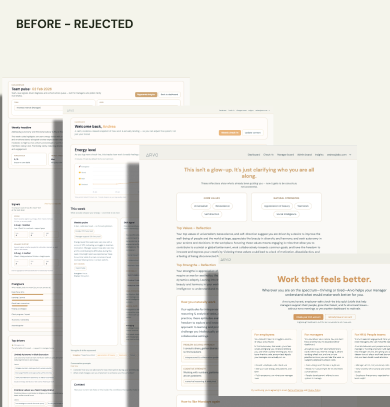
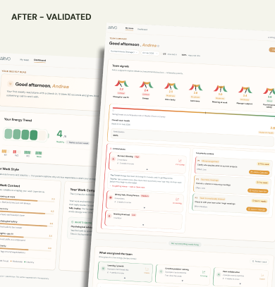
Eleven of twelve managers got tripped up by terms like "emotional labour" — language that reads fine in an HR research paper and means almost nothing on a Tuesday afternoon. We rewrote the entire vocabulary into plain English without changing what any of it actually meant underneath, and the trust in the platform shifted anyway.
Academic terminology (before) → plain English (after)
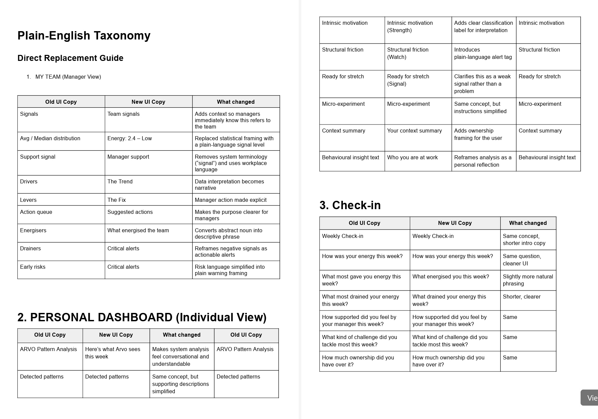
A checklist feels like admin no matter how it's designed, and a calendar invite feels like a decision — so instead of reframing the tasks themselves, I changed what completing one actually looked like. A manager could now schedule the action directly from the dashboard rather than tick a box that felt like one more piece of homework.
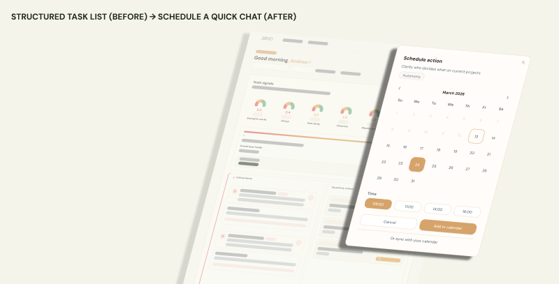
06 Final Solution
Single page. Traffic-light health at a glance. Plain-English alerts. Built for three minutes on a Monday morning.


07 The outcome
Presenting this to our client was the hardest facilitation moment of the project. The framing had to be precise that this wasn't a design failure, it was clarity. I wanted her to walk away knowing exactly where design ended and where product strategy began, not feeling like the project had come up short.
Effective design goes beyond the interface to strengthen the underlying business logic. To ensure sustainable success, I tackled the root of three core business challenges, developing formal strategic recommendations and presenting them to guide Eileen's upcoming product decisions.
2
Resolved
Validated with real managers in Round 2.
1
Designed, Untested
Redesigned for the final iteration, not yet retested.
3
Business Decision
Not something design could fix on its own — Eileen's call next.
1
Unresolved
No fix, no clean product decision reaches it.
We validated this one directly — 12 of the 13 managers in Round 2 read the alerts correctly in under three minutes.
Also validated — 9 of 13 specifically praised how much less mental effort the redesign asked of them.
Redesigned for the final iteration. The sprint ended before a retest.
Plain-English taxonomy patched the UI. The AI's own output still needs retraining at the model level — Eileen's call, not mine.
Anonymity needs a structural trust threshold, not UI copy. Written up as a product decision.
Weekly check-ins were fatiguing managers. Recommended monthly or fortnightly instead of a UI patch.
Some managers had already mentally checked out before we tested with them. Nothing here reached that.


08 Retrospective
The most useful thing I did wasn't jumping straight into redesigning a screen with the team. It was asking whether the screens were even the problem.
An eye-opening experience was getting used to the possibility that design can have its limitations while trying to solve issues users may have. Through ARVO, a written brief naming each returned problem, its owner, and suggesting next step was just as useful to ARVO's Founder than any feature built on a whim.
Considering whether to leave Energisers & Drainers untouched took more conviction than redesigning it. Restraint is a skill I want to keep practising.
I've always believed that presenting a united front is key to giving a client peace of mind, so I made it a point to get my team fully aligned before every meeting with our Client. She actually called this out as a major strength in her feedback. Seeing the impact it had, I now do this intentionally with every project.
Design stack
User Interviews
Usability Testing
Affinity Mapping
Competitive Analysis
Co-creation Workshop
Problem Scoping
Root Cause Classification
Stakeholder Alignment
Plain-English Taxonomy
Information Architecture
Interaction Design
UI Design
Accessibility Audit (WCAG AA)
Prototyping
Interactive Figma Prototype
React / HTML / CSS Components
Plain-English Taxonomy Doc
Competitive Analysis Report
UX Research Report
Final presentation
Other Case Studies
Open to UX design and research roles or freelancing service. If you’re building something complex that needs to feel simple particularly for social good — let’s talk!